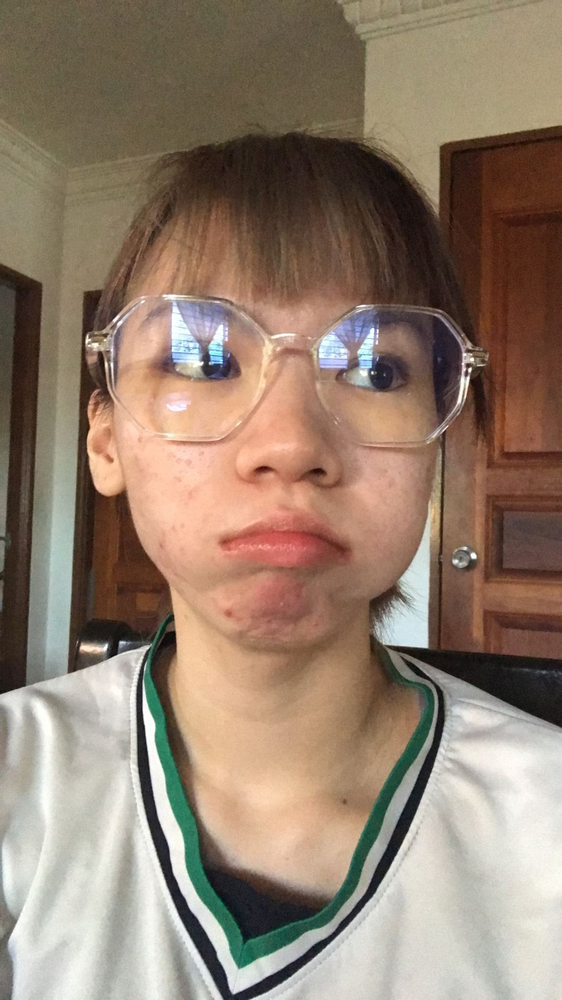

Because you are the standard and I will not lose to that.
To the most loved, goofball.

Play this song in the background for dramatic effect.
"Your overanalyzing isn't tiring, no
It's always fine"I want you to remember that. A little bit about this song,
"Permanent +1 an enchanting listen celebrating the most treasured relationships, the people who are there for you during life's highs and lows.“'permanent +1' is about the person in your life who is always there," says Luz. "Yes, they are the person you take with you to your cousin’s wedding, to a birthday party and to your family’s Sunday dinner. But they are also the person you take grocery shopping, who comes with you to a doctor’s visit and who helps you do your laundry.”
It's such a delicate, heartwarming offering, and surely a dose of good feels in these complicated times."
A short message because I probably say this a lot.
First off, this song really reminds me of you simply because based off the meaning behind its creation and the lyrics itself considering how we had our fall out but still found our way back to each other hehe. Thank you for simply existing and for simply raising the standards for being a great friend. Do not forget that you are an amazing person and remember to take breaks. Do not be so hard on yourself and don't be afraid to take risks. Life is short, so enjoy it to the fullest. Do not be afraid of failure because they are your progression to success. I hope you will get what you always wish for. When you go overseas to study, don't forget about us. Life may be hard but I will be there for you like how you were there for me. When you do find another worthy friend, make sure they are up to my standard. If not then I am thus, irreplaceable.
Okay, have a good day. This is my modern day love language, words of affirmation but via website